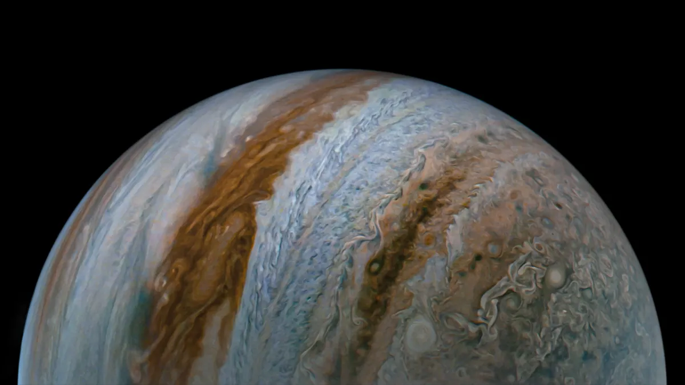

Posted 1d ago
A stunning view of Jupiter seen by NASA’s Juno mission during a close flyby of the gas giant on Sept. 7.
"As Juno's journey progresses, we're achieving scientific outcomes that truly define a new Jupiter."
NASA’s Juno spacecraft has observed Jupiter's winds penetrating the gas giant’s atmosphere. These findings could ultimately reveal more about Jupiter's mysterious, and quite turbulent, interior. What's more, the Jovian gravity data collected by Juno showed a team of international scientists that these atmospheric winds are whipping through the gas giant planet in a "cylindrical" manner, moving parallel to the planet's spin axis.
Each of the seven blisteringly hot extra-solar planets — or "exoplanets" — in the system Kepler-385 received more radiation from the sun-like star they orbit than any planet in the solar system receives from the sun. The planets all appear to be larger than Earth but smaller than the solar system ice-giant Neptune. Excitingly, the Kepler-385 system is just one of the highlights in a new Kepler Space Telescope-created catalog of around 4,400 exoplanet candidates and 700 multi-planet systems that has astronomers thrilled about the information they might glean from it.
The NASA spacecraft has had a ringside seat to the violent goings-on in Jupiter's atmosphere since 2016, when it arrived at the largest planet in our solar system. Juno has dutifully made around 55 flybys of Jupiter and continues to use a suite of science instruments to peer deep into the world's atmosphere, as well as through surface clouds to observe the planet’s inner workings. "As Juno's journey progresses, we’re achieving scientific outcomes that truly define a new Jupiter and that likely are relevant for all giant planets, both within our solar system and beyond," Juno's principal investigator, Scott Bolton, said in a statement. "The resolution of the newly determined gravity field is remarkably similar to the accuracy we estimated 20 years ago. It is great to see such agreement between our prediction and our results."
As Juno flies past Jupiter at around 130,000 miles per hour (209,000 kilometers per hour) — which is around 85 times the top speed of a fighter jet — NASA’s Deep Space Network antennas track the spacecraft’s radio signals, measuring tiny changes in velocity.These shifts, which can be as small as 0.01 millimeters per second, arise due to variations in the planet’s gravity field. And mapping those gravity variations essentially lets researchers look into Jupiter’s atmosphere.
This radio science approach has already led to a slew of discoveries for Juno, including the revelation that deep within Jupiter lies a dilute core that may have been created when the planet suffered a giant collision with a round body long ago. It has also allowed researchers to measure the depths of Jupiter's various zones and belts — extending from its cloud tops down around 1,860 miles (3,000 kilometers).